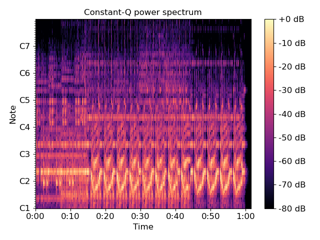

librosa.core.cqt¶
-
librosa.core.cqt(y, sr=22050, hop_length=512, fmin=None, n_bins=84, bins_per_octave=12, tuning=0.0, filter_scale=1, norm=1, sparsity=0.01, window='hann', scale=True, pad_mode='reflect', res_type=None)[source]¶ Compute the constant-Q transform of an audio signal.
This implementation is based on the recursive sub-sampling method described by [1].
- 1
Schoerkhuber, Christian, and Anssi Klapuri. “Constant-Q transform toolbox for music processing.” 7th Sound and Music Computing Conference, Barcelona, Spain. 2010.
- Parameters
- ynp.ndarray [shape=(n,)]
audio time series
- srnumber > 0 [scalar]
sampling rate of y
- hop_lengthint > 0 [scalar]
number of samples between successive CQT columns.
- fminfloat > 0 [scalar]
Minimum frequency. Defaults to C1 ~= 32.70 Hz
- n_binsint > 0 [scalar]
Number of frequency bins, starting at fmin
- bins_per_octaveint > 0 [scalar]
Number of bins per octave
- tuningNone or float
Tuning offset in fractions of a bin.
If None, tuning will be automatically estimated from the signal.
The minimum frequency of the resulting CQT will be modified to fmin * 2**(tuning / bins_per_octave).
- filter_scalefloat > 0
Filter scale factor. Small values (<1) use shorter windows for improved time resolution.
- norm{inf, -inf, 0, float > 0}
Type of norm to use for basis function normalization. See
librosa.util.normalize.- sparsityfloat in [0, 1)
Sparsify the CQT basis by discarding up to sparsity fraction of the energy in each basis.
Set sparsity=0 to disable sparsification.
- windowstr, tuple, number, or function
Window specification for the basis filters. See filters.get_window for details.
- scalebool
If True, scale the CQT response by square-root the length of each channel’s filter. This is analogous to norm=’ortho’ in FFT.
If False, do not scale the CQT. This is analogous to norm=None in FFT.
- pad_modestring
Padding mode for centered frame analysis.
See also:
librosa.core.stftand np.pad.- res_typestring [optional]
The resampling mode for recursive downsampling.
By default,
cqtwill adaptively select a resampling mode which trades off accuracy at high frequencies for efficiency at low frequencies.You can override this by specifying a resampling mode as supported by
librosa.core.resample. For example, res_type=’fft’ will use a high-quality, but potentially slow FFT-based down-sampling, while res_type=’polyphase’ will use a fast, but potentially inaccurate down-sampling.
- Returns
- CQTnp.ndarray [shape=(n_bins, t), dtype=np.complex or np.float]
Constant-Q value each frequency at each time.
- Raises
- ParameterError
If hop_length is not an integer multiple of 2**(n_bins / bins_per_octave)
Or if y is too short to support the frequency range of the CQT.
Notes
This function caches at level 20.
Examples
Generate and plot a constant-Q power spectrum
>>> import matplotlib.pyplot as plt >>> y, sr = librosa.load(librosa.util.example_audio_file()) >>> C = np.abs(librosa.cqt(y, sr=sr)) >>> librosa.display.specshow(librosa.amplitude_to_db(C, ref=np.max), ... sr=sr, x_axis='time', y_axis='cqt_note') >>> plt.colorbar(format='%+2.0f dB') >>> plt.title('Constant-Q power spectrum') >>> plt.tight_layout() >>> plt.show()
Limit the frequency range
>>> C = np.abs(librosa.cqt(y, sr=sr, fmin=librosa.note_to_hz('C2'), ... n_bins=60)) >>> C array([[ 8.827e-04, 9.293e-04, ..., 3.133e-07, 2.942e-07], [ 1.076e-03, 1.068e-03, ..., 1.153e-06, 1.148e-06], ..., [ 1.042e-07, 4.087e-07, ..., 1.612e-07, 1.928e-07], [ 2.363e-07, 5.329e-07, ..., 1.294e-07, 1.611e-07]])
Using a higher frequency resolution
>>> C = np.abs(librosa.cqt(y, sr=sr, fmin=librosa.note_to_hz('C2'), ... n_bins=60 * 2, bins_per_octave=12 * 2)) >>> C array([[ 1.536e-05, 5.848e-05, ..., 3.241e-07, 2.453e-07], [ 1.856e-03, 1.854e-03, ..., 2.397e-08, 3.549e-08], ..., [ 2.034e-07, 4.245e-07, ..., 6.213e-08, 1.463e-07], [ 4.896e-08, 5.407e-07, ..., 9.176e-08, 1.051e-07]])